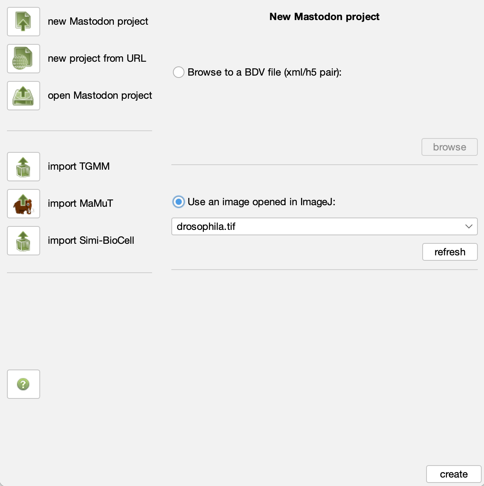

Image Time Series Analysis#
Lab authors: Hunter Elliott, Damian Dalle Nogare and Florian Jug .
This file last updated 2024-04-04.
Notes from the spreadsheet on what we might want to update:
Maybe add some BTrack stuff - (Alan says there's a good notebook), and/or UlTrac and/or TracX
Part 1: Tracking#
Learning Objectives#
Overview#
Tracking is an unsolved problem. It can be easy, but it usually is not. If you need to reach flawless results, you have to curate manually.
This being said, manual tracking is very time consuming and boring/annoying. Hence, we will be exploring semi-automatic tracking regimes and also see how automated results can then be loaded for manual curation.
More specifically, we will get to know Mastodon and learn more about ilastik. Mastodon is a Fiji plugin designed to deal with truly huge time-lapses, which makes it an exquisitely valuable choice for many tracking projects.
We know ilastik already from other exercises, but today we will explore some of ilastik’s tracking features. The automated tracking in Ilastik is quite involved. Some key ideas we discussed in the lecture.
Note
This lab is intended to be interactive. If you find something cool… don’t hold back… share it with others. These tools are rather complex and we will certainly not be able to see all their features.
Get the data we need#
Please start to download the following data (you can also find it in the LabData folder on our google drive):
Drosophila.tif - http://tinyurl.com/yy5nsuce
2D+t tracking example for ilastik: http://tinyurl.com/y67af3mz
3D+t tracking example for ilastik: http://tinyurl.com/y4sdzg9p
(Semi-)automated Tracking in Mastodon#
Required: Fiji + Mastodon + drosophila.tif
Important
Collect screenshots or remember what you learned here. Be prepared to show the coolest thing you found out tomorrow morning (you absolutely will be volunteered to share your findings).
Step 1: Start a Mastodon project from a single tiff File#
Put the file ‘drosophila.tif’ in some folder. Link to download this file can be found further up in Exercise 0.
In Fiji do: Help > Update > Manage update sites
Check boxes next to “Mastodon”.
Close > Apply changes > restart Fiji
Open ‘drosophila.tif’ in Fiji.
In Fiji, start Mastodon: Plugins > Mastodon
In Mastodon, start a new project by clicking “new Mastodon project”.
Click on “use an image open in ImageJ” and select the drosophila you just opened in Fiji.

Click on “create” to create the new Mastodon project. A new window will open.

In this new window, you can now open BDVs and TrackSchemes by clicking the respective buttons.
Please try to navigate the data and play with a few BDV shortcuts. Navigating 3D space can be confusing and a few shortcuts are really, really valuable. Here a quick reminder to what we’ve seen yesterday:
If you left click and drag, you can reslice in arbitrary directions.
Note the overview sketch on the top left… very helpful!Right click and drag is moving the volume around.
Shift + X/Y/Z is rotating between the three exes parallel directions. Also here these rotations happen around the current mouse location.
The mouse wheel is shifting the visible image plane in and out.
Shift + ctrl + mouse wheel (on windows) is zooming in and out.
Spend some additional time to internalize some more shortcuts:
https://imagej.net/BigDataViewer#Basic_Navigation
Step 2: Manually track some cells#
Get the Mastodon cheat sheet: http://tinyurl.com/y2rxfhlv
Figure out how to:
Manually add cell detections (a)
Change their size to better fit the data (q/e)
Move detections around (hold space + drag)
Look at the detections you created using the TrackSceme view
Link detections across time (hold L + drag)
Do this in TrackScheme
Do this in one in a BDV window
Delete detections/links (d)
Figure out what the lock symbols in the top left of each view window are for…
Figure out what the ‘context’ in a TrackSceme controls (you will need to have tracked some lineages for this).
Did you spot the undo function yet? (Ctrl + z)
Ask yourself how long it would take to manually track every single nucleus in this really quite small dataset. Once this sunk in, pity everyone who has to do that for his/her project.
Step 3: Semi-automatic tracking to speed things up#
Get some instructions: http://tinyurl.com/y39vgnuy (warning, they are slightly outdated, screenshots will look a bit different than the Mastodon you are using today…)
Now speed up your tracking work and try to find an efficient way to navigate Mastodon. (Remember, tomorrow we will volunteer people to show and compare found ways to track fast and efficiently…)
Step 4: Automatic tracking using the TrackMate plugin#
Use (in Mastodon, not Fiji): Plugins > Tracking > Detection… and detect cells in some part of the volume (the ROI-box to select a part can also be using from within BDV).
Then use: Plugins > Tracking > Linking… and link those detections to each other. This will not lead to perfect results. Don’t worry about that!
Play with options, check if you can improve results somehow.
Tracking in Ilastik#
Please go to https://ilastik.github.io/documentation/tracking/tracking and follow the instructions on this page.
Since downloads from the ilastik website can be slow. If so, please use the following links to get the sample data and projects (likely you have downloaded this in Exercise 0 already, no need to download it again):
2D+t tracking example for ilastik: http://tinyurl.com/y67af3mz
3D+t tracking example for ilastik: http://tinyurl.com/y4sdzg9p
The 2D example will be way faster to work with, but please choose any of the two. After the download is completed, unzip the file and open “conservationTracking.ilp” in ilastik (double click should do it).
Please collect some screenshots or remember what you liked most. Be prepared to show the coolest thing you found out tomorrow morning. Some of you will be volunteered to share their findings… ;)
Some things to try after you start feeling comfortable with ilastik. There is much more interesting stuff to explore. Here some inspiration:
For the 2D+t example…
Can you spot some cells in the last time-point that are actually mergers of more than 2 cells? Can you change this somehow and make ilastik also detect mergers of more then 2 objects?
Please play with the individual steps and observe the many image layers. Which one might be particularly useful? When?
For the 3D+t example…
How long did it take to track automatically? Is there a way to speed this up? (Ask the online manual…)
Part 2: Photobleaching#
Learning Objectives#
Apply and scrutinize photobleach correction
Double-normalized FRAP analysis
Lab Data: https://tinyurl.com/qi2024labs
Bleach Correction#
In this portion of the lab, you will compensate for photobleaching by fitting an exponential model to the decaying fluorescence intensity, and then correcting for this decay.
Load the data:
Go to folder BleachCorrection
Load TRITC into Fiji by dragging the folder into the Fiji window (click yes when asked to open as a stack, but leave the checkboxes unchecked).
Apply Fiji’s built-in photobleach correction plugin
Image > Adjust > Bleach Correction
Correction Method: Exponential Fit. Press OK.
This plugin outputs a corrected image as well the fitted exponential decay. Since you have not selected an ROI it is using the average intensity in the entire image to perform the correction. Have a look at the corrected image: does it look like what you would expect?
You can select a region and measure its intensity over time by drawing an ROI and then going to Image->Stacks->Plot Z Axis Profile (since there’s no Z axis this will actually plot a profile over time). Make a measurement like this of the center of a nucleus as well as the background. What do you see?
Now, re-load the original dataset and select an ROI of a nucleus. Be sure it stays on the nucleus during the entire time series! Now perform the photobleach correction again. What do you see now? Why is this? What is the “right” way to photobleach correct these images?
Make a note of the decay rate (parameter ‘b’) from the exponential fit.
Repeat for the FITC channel. Which image is bleaching faster?
How well does the correction work on the FITC channel? Do we need to select an ROI here? Why or why not?
We now have approximately the same average intensity at the end of the FITC time series. Is the SNR the same at the beginning and end? Does the photobleach correction affect the SNR?
FRAP#
Load the data: FRAP/33108 SU295 try1.tif (Or use your own if you prefer)
Create an ROI over the square bleached region. Add it to the ROI Manager (press ‘t’).
Plot the intensity in this region over time (Image > Stacks > Plot Z-axis Profile)
Does the intensity recover to a stable value?
Could we use a photobleaching correction like in the previous exercise? Why or why not?
Now we will run a FRAP plugin. This is going to apply a similar analysis that you did above: photobleach correction, and then exponential fitting, but it will do it using a double-normalization approach. You can find this plugin by going to https://bit.ly/3xdsQUR, or we’ve provided a copy in the lab data folder. Then, unzip the plugin and copy it to the “plugins” folder inside the folder Fiji is installed in, then restart Fiji.
First, perform a uniform background subtraction on your images by measuring the mean intensity in a region of the background and then going to Process > Math > Subtract. Why do we want to do a uniform subtraction rather than e.g. a rolling ball?
You will need to have two ROIs in the ROI Manager. One for the square bleached region, and a second ROI for the whole cell (including the frapped region). If you can’t include the whole cell, just include a large region of the same cell which includes the frapped region. When might this non-whole-cell ROI be OK? When might it be problematic?
Launch the FRAP Profiler plugin (Plugins > FRAP Profiler v2).
Enter the correct time interval, so that your recovery rate is in the correct units.
Run first with a single exponential. Compare the fitted curve to the raw data in the figure that is created (in the procFRAP and normFRAP windows). (Ideally we would compare this quantitatively but the plugin doesn’t support this :( )
Re-run the plugin with double exponential. Is the fit better? A double exponential models a two step process, e.g., fast but weak association of the molecule of interest, followed by slower stronger association.
What is the % mobile?